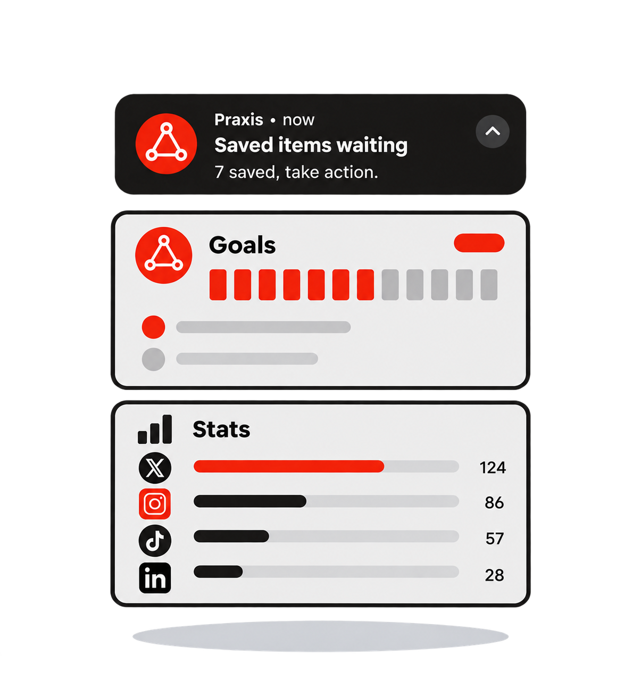

PRAXIS
PRAXIS turns social saves into practice.
Save Shorts, Reels, threads and LinkedIn posts. PRAXIS sorts those saves against a named goal, schedules them as timed sessions, and forces one reflection note per session. Nothing counts until you log what you did with it.
Save From Any Feed, In One Place
Share posts from any social media or the web, and find them all in one inbox.

Turn Saves Into Practice
Plan what you saved against a goal. Get reminded, take action, and watch your progress grow.